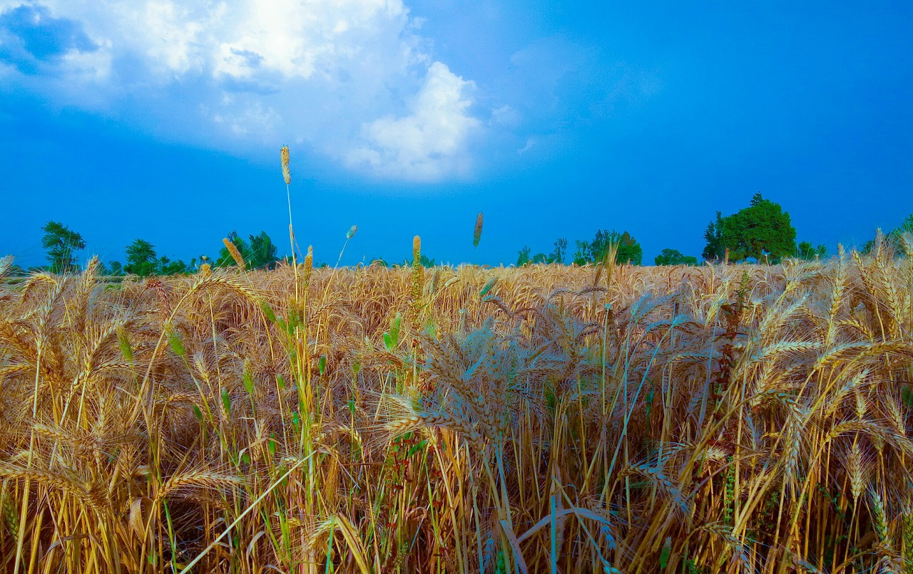

Rising global average temperature is associated with widespread changes in weather patterns. Scientific studies indicate that extreme weather events such as heat waves and large storms are likely to become more frequent or more intense with human-induced climate change. This chapter focuses on observed changes in temperature, precipitation, storms, floods, and droughts.
ong-term changes in climate can directly or indirectly affect many aspects of society in potentially disruptive ways. For example, warmer average temperatures could increase air conditioning costs and affect the spread of diseases like Lyme disease, but could also improve conditions for growing some crops. More extreme variations in weather are also a threat to society. More frequent and intense extreme heat events can increase illnesses and deaths, especially among vulnerable populations, and damage some crops. While increased precipitation can replenish water supplies and support agriculture, intense storms can damage property, cause loss of life and population displacement, and temporarily disrupt essential services such as transportation, telecommunications, energy, and water supplies.